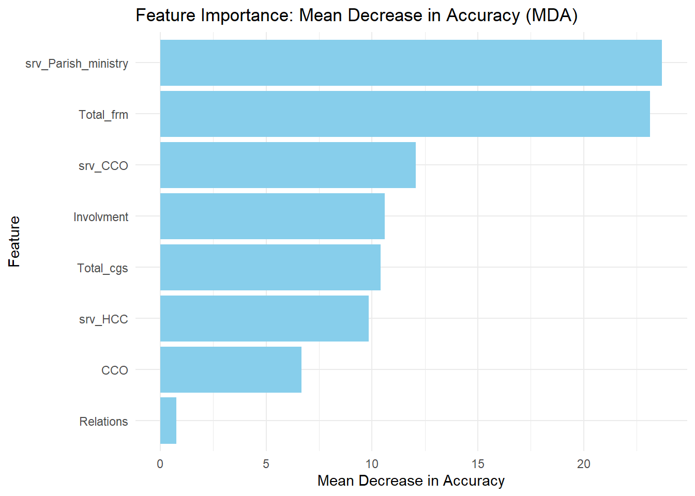
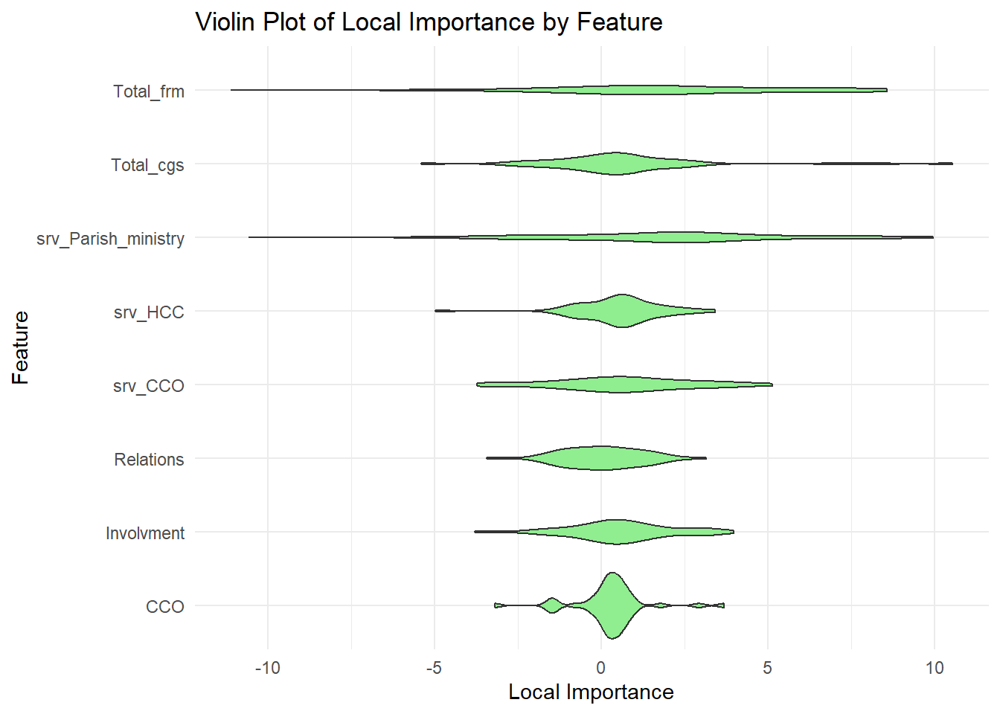
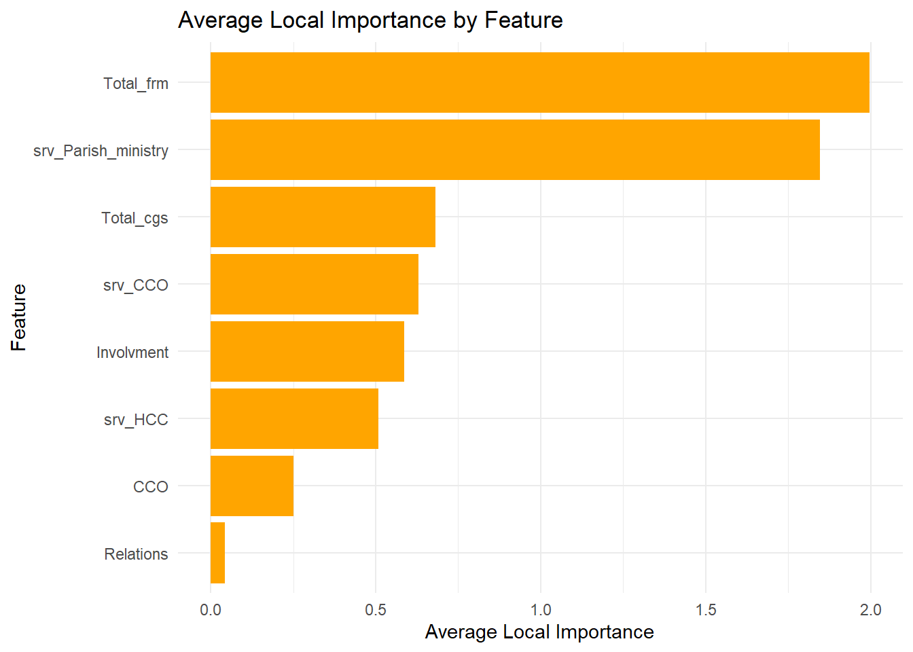
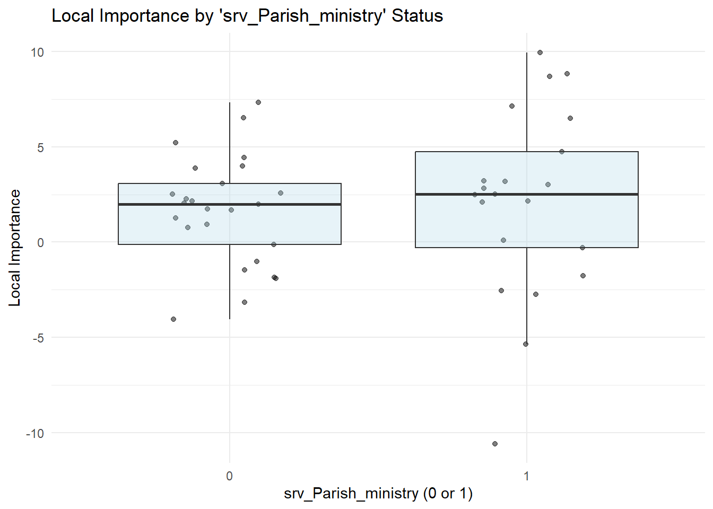
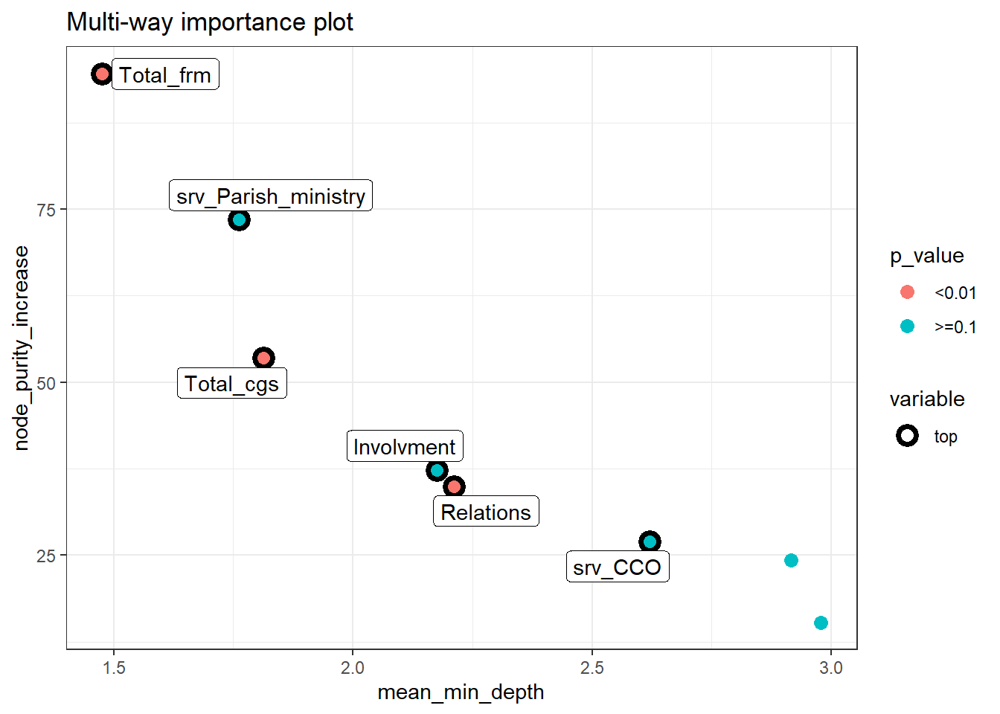

Chapter 13 HCC_Survey_Analysis
13.1 Our data and Purpose
Load our libraries that we will use
library(readr)
library(dplyr)
library(DataExplorer)
library(tidyr)
library(ggplot2)
library(caret)
library(randomForest)
library(randomForestExplainer)
library(pdp)## Warning: package 'pdp' was built under R version 4.3.3##
## Attaching package: 'pdp'## The following object is masked from 'package:purrr':
##
## partial## Rows: 46 Columns: 83
## ── Column specification ──────────
## Delimiter: ","
## chr (8): Time, Location, Campus, Involvment, Faith, Formation_Helpful, Eff_...
## dbl (75): cg_SMU, cg_Summit, cg_Other, cg_Dal, cg_Social, cg_Parish, cg_MW, ...
##
## ℹ Use `spec()` to retrieve the full column specification for this data.
## ℹ Specify the column types or set `show_col_types = FALSE` to quiet this message.names(HCC_Survey) <- gsub(" ", "_", names(HCC_Survey))
names(HCC_Survey) <- gsub("'", "", names(HCC_Survey))
names(HCC_Survey) <- gsub("[()]", "", names(HCC_Survey))
names(HCC_Survey) <- make.names(names(HCC_Survey), unique = TRUE)
# Select initial columns
cols_to_keep <- c("Involvment", "Relations",
grep("^cg_|^dsc_|^frm_|^srv_", names(HCC_Survey), value = TRUE))
HCC_Survey <- HCC_Survey[, cols_to_keep]
# Create Total_cgs
cg_cols <- grep("^cg_", names(HCC_Survey), value = TRUE)
HCC_Survey$Total_cgs <- rowSums(HCC_Survey[, cg_cols], na.rm = TRUE)
HCC_Survey <- HCC_Survey[, !names(HCC_Survey) %in% cg_cols]
# Create CCO
cco_cols <- grep("^frm_CCO", names(HCC_Survey), value = TRUE)
HCC_Survey$CCO <- ifelse(rowSums(HCC_Survey[, cco_cols], na.rm = TRUE) > 0, 1, 0)
HCC_Survey <- HCC_Survey[, !names(HCC_Survey) %in% cco_cols]
# Create srv_CCO
srv_cco_cols <- c("srv_Leading_a_faith_study", "srv_CCO_Exec", "srv_CCO_Events")
HCC_Survey$srv_CCO <- ifelse(rowSums(HCC_Survey[, srv_cco_cols], na.rm = TRUE) > 0, 1, 0)
HCC_Survey <- HCC_Survey[, !names(HCC_Survey) %in% srv_cco_cols]
# Remove specified columns and rename
cols_to_remove <- c("dsc_Other", "srv_Other_please_indicate", "srv_I_didnt_serve_in_ministry")
HCC_Survey <- HCC_Survey[, !names(HCC_Survey) %in% cols_to_remove]
names(HCC_Survey)[names(HCC_Survey) == "srv_HCC_Volunteering_ex._CLT"] <- "srv_HCC"
# Create Total_dsc and Total_frm
dsc_cols <- grep("^dsc_", names(HCC_Survey), value = TRUE)
frm_cols <- grep("^frm_", names(HCC_Survey), value = TRUE)
data <- HCC_Survey
data$Total_dsc <- rowSums(data[, dsc_cols], na.rm = TRUE)
data$Total_frm <- rowSums(data[, frm_cols], na.rm = TRUE)
data <- data[, !names(data) %in% c(dsc_cols, frm_cols)]
# Convert factors and combine Impressions into Casual
data$Involvment <- factor(replace(data$Involvment, data$Involvment == "Impressions", "Casual"))
data$Relations <- factor(data$Relations)
# Sort columns alphabetically
data <- data[, sort(names(data))]
# Display structure and create data_rf
glimpse(data)## Rows: 46
## Columns: 9
## $ CCO <dbl> 0, 0, 1, 1, 1, 1, 1, 1, 1, 0, 1, 0, 1, 1, 1, 1, 1,…
## $ Involvment <fct> Casual, Casual, Casual, Casual, Committed, Engaged…
## $ Relations <fct> 3 to 6, 3 to 6, 3 to 6, 3 to 6, 3 to 6, More than …
## $ srv_CCO <dbl> 0, 0, 1, 0, 0, 1, 0, 1, 0, 0, 1, 0, 1, 1, 1, 1, 0,…
## $ srv_HCC <dbl> 0, 0, 0, 0, 1, 0, 1, 1, 0, 1, 1, 0, 0, 0, 0, 1, 1,…
## $ srv_Parish_ministry <dbl> 1, 0, 1, 0, 1, 1, 0, 0, 0, 1, 1, 0, 0, 0, 1, 1, 1,…
## $ Total_cgs <dbl> 3, 3, 4, 4, 6, 5, 4, 4, 1, 1, 3, 3, 4, 4, 5, 4, 6,…
## $ Total_dsc <dbl> 7, 3, 9, 5, 9, 5, 4, 9, 5, 10, 10, 6, 4, 6, 10, 10…
## $ Total_frm <dbl> 4, 1, 0, 0, 3, 1, 3, 4, 0, 6, 3, 1, 2, 2, 2, 3, 6,…write the data then re read it
The following data has been already pre-proccessed
## Rows: 46
## Columns: 10
## $ X <int> 1, 2, 3, 4, 5, 6, 7, 8, 9, 10, 11, 12, 13, 14, 15,…
## $ CCO <int> 0, 0, 1, 1, 1, 1, 1, 1, 1, 0, 1, 0, 1, 1, 1, 1, 1,…
## $ Involvment <chr> "Casual", "Casual", "Casual", "Casual", "Committed…
## $ Relations <chr> "3 to 6", "3 to 6", "3 to 6", "3 to 6", "3 to 6", …
## $ srv_CCO <int> 0, 0, 1, 0, 0, 1, 0, 1, 0, 0, 1, 0, 1, 1, 1, 1, 0,…
## $ srv_HCC <int> 0, 0, 0, 0, 1, 0, 1, 1, 0, 1, 1, 0, 0, 0, 0, 1, 1,…
## $ srv_Parish_ministry <int> 1, 0, 1, 0, 1, 1, 0, 0, 0, 1, 1, 0, 0, 0, 1, 1, 1,…
## $ Total_cgs <int> 3, 3, 4, 4, 6, 5, 4, 4, 1, 1, 3, 3, 4, 4, 5, 4, 6,…
## $ Total_dsc <int> 7, 3, 9, 5, 9, 5, 4, 9, 5, 10, 10, 6, 4, 6, 10, 10…
## $ Total_frm <int> 4, 1, 0, 0, 3, 1, 3, 4, 0, 6, 3, 1, 2, 2, 2, 3, 6,…CCO: whether someone has taken a CCO fairht study or not Involvment: this is categorical and represents the level of involvement of the person Relations: This counts the number of people a individual identifies as having a close relationship with currently srv_CCO: This is a binary variable that represents whether someone has served in a CCO ministry or not srv_HCC: This is a binary variable that represents whether someone has served in a HCC ministry or not srv_Parish_ministry: This is a binary variable that represents whether someone has served in a Parish ministry or not Total_cgs: This is the total number of community groups a person is apart of. Total_dsc: This is the total number of spiritual disciplines a person has in their life currently Total_frm: This is the total number of formations that a person has attended via HCC.
This is our data we will use
13.2 Exploratory Data Analysis
# First read the data and convert categorical variables to factors
data <- read.csv("proccessed_surveyHCC.csv", stringsAsFactors = FALSE)
data$Involvment <- as.factor(data$Involvment)
data$Relations <- as.factor(data$Relations)
# Create the model matrix for factors only
factor_cols <- sapply(data, is.factor)
factor_data <- data[, factor_cols, drop = FALSE]
dummy_vars <- model.matrix(~., data = factor_data)[, -1] # Remove intercept
# Combine the dummy variables with the non-factor columns
numeric_cols <- sapply(data, is.numeric)
data_encoded <- cbind(
as.data.frame(dummy_vars),
data[, numeric_cols, drop = FALSE]
)
# Make sure Total_dsc is included
if(!"Total_dsc" %in% names(data_encoded)) {
data_encoded$Total_dsc <- data$Total_dsc
}
# Calculate correlations
cols_for_cor <- setdiff(names(data_encoded), "Total_dsc")
correlations_list <- sapply(data_encoded[cols_for_cor], function(x) {
cor(x, data_encoded$Total_dsc, use = "complete.obs")
})
# Create correlation data frame
correlations <- data.frame(
column = names(correlations_list),
correlation = unlist(correlations_list)
)
# Sort by absolute correlation
correlations <- correlations[order(abs(correlations$correlation), decreasing = TRUE), ]
rownames(correlations) <- NULL
# If you want to keep the ggplot visualization:
library(ggplot2)
ggplot(correlations, aes(x = reorder(column, correlation), y = correlation)) +
geom_bar(stat = "identity", fill = "steelblue") +
coord_flip() +
labs(title = "Correlation of All Columns with Total Disciplines",
x = "Column",
y = "Correlation") +
theme_minimal()## column correlation
## 1 Total_frm 0.62062501
## 2 srv_Parish_ministry 0.59772804
## 3 Total_cgs 0.47432114
## 4 InvolvmentCommitted 0.44987501
## 5 srv_HCC 0.44519710
## 6 srv_CCO 0.41644453
## 7 Relations7 to 10 0.24458238
## 8 CCO 0.21960995
## 9 Relations3 to 6 -0.16737169
## 10 RelationsMore than 10 0.08832141
## 11 X -0.05220109
## 12 InvolvmentEngaged -0.0137231213.3 Modeling Random Forest
# Train the Random Forest model with 1500 trees
rf_model <- randomForest(Total_dsc ~ ., data = data_rf, ntree = 1500, importance = TRUE, localImp = TRUE)
# Print the model summary
print(rf_model)##
## Call:
## randomForest(formula = Total_dsc ~ ., data = data_rf, ntree = 1500, importance = TRUE, localImp = TRUE)
## Type of random forest: regression
## Number of trees: 1500
## No. of variables tried at each split: 2
##
## Mean of squared residuals: 5.236783
## % Var explained: 47.83## [1] 2.288402## [1] 1.84213613.4 Global Importance
Get MDI
## IncNodePurity
## CCO 16.13296
## Involvment 36.69981
## Relations 34.75069
## srv_CCO 28.76142
## srv_HCC 24.06673
## srv_Parish_ministry 71.74472
## Total_cgs 52.24009
## Total_frm 93.05213get MDA
## %IncMSE
## CCO 8.0530544
## Involvment 11.5370935
## Relations 0.9051989
## srv_CCO 10.2868360
## srv_HCC 10.3221455
## srv_Parish_ministry 25.0387096
## Total_cgs 10.8179434
## Total_frm 24.3258848Plot Mda and mdi
# Get MDI (Mean Decrease in Node Impurity)
mdi <- importance(rf_model, type = 2)
# Get MDA (Mean Decrease in Accuracy)
mda <- importance(rf_model, type = 1)
# Convert the importance values to a data frame for easier plotting
importance_df <- as.data.frame(mdi)
importance_df$Feature <- rownames(importance_df)
importance_df$MDA <- mda[, 1]
# Rename the MDI column appropriately
colnames(importance_df)[1] <- "IncNodePurity"
# Sort the data frames by MDA and MDI
mda_df <- importance_df %>% arrange(desc(MDA))
mdi_df <- importance_df %>% arrange(desc(IncNodePurity))
# Plotting MDA
ggplot(mda_df, aes(x = reorder(Feature, MDA), y = MDA)) +
geom_bar(stat = "identity", fill = "skyblue") +
coord_flip() +
labs(title = "Feature Importance: Mean Decrease in Accuracy (MDA)",
x = "Feature",
y = "Mean Decrease in Accuracy") +
theme_minimal()
# Plotting MDI
ggplot(mdi_df, aes(x = reorder(Feature, IncNodePurity), y = IncNodePurity)) +
geom_bar(stat = "identity", fill = "salmon") +
coord_flip() +
labs(title = "Feature Importance: Mean Decrease in Node Impurity (MDI)",
x = "Feature",
y = "Mean Decrease in Node Impurity") +
theme_minimal()MDA doesn’t rely on the internal structure of the model but rather on the model’s performance with altered data.
MDI computes importance scores based on how much each feature contributes to homogeneity in nodes across all trees. For classification, this is often measured by the Gini impurity, and for regression, it can be measured by the variance reduction.
13.5 Local Importance
# Extract the local importance
local_importance <- rf_model$localImp
# View the dimensions of local_importance to understand its structure
dim(local_importance)## [1] 8 468 features and 46 observations
##
## Attaching package: 'reshape2'## The following object is masked from 'package:tidyr':
##
## smiths# Assuming local_importance is a matrix or data frame with observations as columns and features as rows
local_importance_df <- as.data.frame(local_importance)
local_importance_df$Feature <- rownames(local_importance_df)
local_importance_melted <- melt(local_importance_df, id.vars = "Feature")
ggplot(local_importance_melted, aes(x = variable, y = Feature, fill = value)) +
geom_tile() +
scale_fill_gradient(low = "white", high = "blue") +
labs(title = "Heatmap of Local Importance",
x = "Observation",
y = "Feature") +
theme_minimal()
ggplot(local_importance_melted, aes(x = Feature, y = value)) +
geom_violin(fill = "lightgreen") +
coord_flip() +
labs(title = "Violin Plot of Local Importance by Feature",
x = "Feature",
y = "Local Importance") +
theme_minimal()
avg_importance <- rowMeans(local_importance)
ggplot(data.frame(Feature = names(avg_importance),
AvgImportance = avg_importance),
aes(x = reorder(Feature, AvgImportance), y = AvgImportance)) +
geom_bar(stat = "identity", fill = "orange") +
coord_flip() +
labs(title = "Average Local Importance by Feature",
x = "Feature",
y = "Average Local Importance") +
theme_minimal()
tfi <- local_importance["Total_frm", ]
tfv <- data_rf$Total_frm
# Create a data frame for plotting
importance_frm_df <- data.frame(Total_frm = tfv, Total_frmImportance = tfi)
ggplot(importance_frm_df, aes(x = Total_frm, y = Total_frmImportance)) +
geom_point(alpha = 0.5) +
geom_smooth() +
theme_minimal() +
labs(title = "Local Importance of 'Total_frm'",
x = "Total_frm",
y = "Local Importance of Total_frm")## `geom_smooth()` using method =
## 'loess' and formula = 'y ~ x'# Extract local importance for 'srv_Parish_ministry'
spi <- local_importance["srv_Parish_ministry", ]
spv <- data_rf$srv_Parish_ministry
# Create a data frame for plotting
imp_df <- data.frame(SPM = spv, Imp = spi)
# Plot the violin plot
ggplot(imp_df, aes(x = factor(SPM), y = Imp)) +
geom_violin(fill = "lightgreen") +
theme_minimal() +
labs(title = "Local Importance by 'srv_Parish_ministry' Status",
x = "srv_Parish_ministry (0 or 1)",
y = "Local Importance")# Plot the jitter plot with boxplot overlay
ggplot(imp_df, aes(x = factor(SPM), y = Imp)) +
geom_jitter(width = 0.2, alpha = 0.5) +
geom_boxplot(outlier.shape = NA, fill = "lightblue", alpha = 0.3) +
theme_minimal() +
labs(title = "Local Importance by 'srv_Parish_ministry' Status",
x = "srv_Parish_ministry (0 or 1)",
y = "Local Importance")
13.6 Partial Dependence Plots
Partial Dependence Plots (PDPs): PDPs help you understand the relationship between a feature (or features) and the target variable in a machine learning model, such as a Random Forest. Specifically, they show how the predicted outcome varies with changes in a particular feature, while averaging out the effects of all other features in the model.
Single-Feature PDP: For a single feature, the PDP shows the marginal effect of that feature on the predicted outcome.
How It Works: The model’s predictions are averaged over different values of the feature of interest, holding all other features constant. This allows you to see whether the relationship between the feature and the target is linear, monotonic, or more complex.
pdp_total_frm <- partial(rf_model, pred.var = "Total_frm")
plot(pdp_total_frm, type = "l", main = "Partial Dependence of Total_frm",
xlab = "Total_frm", ylab = "Predicted Total_dsc")
# Generate PDP data for the binary variable 'srv_Parish_ministry'
pdp_srv_parish <- partial(rf_model, pred.var = "srv_Parish_ministry", plot = FALSE)
# Convert the result to a data frame
pdp_df <- as.data.frame(pdp_srv_parish)
# Calculate the difference between the two bars
difference <- round(diff(pdp_df$yhat), 2)
ggplot(pdp_df, aes(x = factor(srv_Parish_ministry), y = yhat)) +
geom_bar(stat = "identity", aes(fill = factor(srv_Parish_ministry)), width = 0.4) +
scale_fill_manual(values = c("0" = "red", "1" = "green")) + # Custom colors for the bars
geom_text(aes(label = round(yhat, 2)), vjust = -0.5, size = 5) + # Display the exact values on top of the bars
expand_limits(y = max(pdp_df$yhat) * 1.2) + # Expand y-axis limits slightly
annotate("text", x = 1.5, y = max(pdp_df$yhat) * 1.1,
label = paste("Difference of Serving\nin Parish Ministry: ", difference),
size = 4, color = "black") + # Smaller size and stacked text
theme_minimal(base_size = 12) +
theme(panel.background = element_rect(fill = "grey", color = NA), # Grey background
plot.background = element_rect(fill = "grey", color = NA),
legend.position = "none") + # Remove the legend
labs(title = "Partial Dependence of srv_Parish_ministry",
x = "srv_Parish_ministry (0 or 1)",
y = "Predicted Total_dsc")13.7 Random Forest Explainer
# Extract the minimum depth distribution of variables
min_depth_frame <- min_depth_distribution(rf_model)
# Measure variable importance
impf <- measure_importance(rf_model)
impf## variable mean_min_depth no_of_nodes mse_increase
## 1 CCO 3.002598 1296 0.29362330
## 2 Involvment 2.159763 2232 0.62082038
## 3 Relations 2.186941 2801 0.04516093
## 4 srv_CCO 2.525087 1609 0.51454140
## 5 srv_HCC 2.934163 1124 0.47609797
## 6 srv_Parish_ministry 1.835050 1954 1.82452498
## 7 Total_cgs 1.863270 3110 0.66980898
## 8 Total_frm 1.562947 3262 2.21378233
## node_purity_increase no_of_trees times_a_root p_value
## 1 16.13296 1024 35 1.000000e+00
## 2 36.69981 1287 202 9.211960e-02
## 3 34.75069 1340 92 6.113672e-44
## 4 28.76142 1194 167 1.000000e+00
## 5 24.06673 928 151 1.000000e+00
## 6 71.74472 1348 294 9.999998e-01
## 7 52.24009 1359 219 2.375626e-92
## 8 93.05213 1398 340 3.452951e-122plot_multi_way_importance(impf,
x_measure = "mean_min_depth",
y_measure = "node_purity_increase", #its regressional so not gini
size_measure = "p_value",
no_of_labels = 6)## Warning: Using alpha for a discrete
## variable is not advised.
node_purity_increase: The total increase in node purity (reduction in variance or MSE) attributed to the variable.
mean_min_depth: The average minimum depth at which the variable is used to split a node.
look more at this
plot_min_depth_distribution(min_depth_frame,
mean_sample = "all_trees",
k = 20,
main = "Distribution of Minimal Depth and Its Mean")